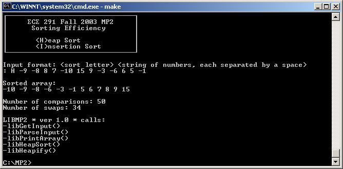

| Assigned | Tuesday, September 16, 2003 |
| Due Date | Wednesday, October 1, 2003 |
| Purpose | User I/O, Sorting Algorithms, C-style Procedures |
| Points | 80 |
In this MP, you'll be analyzing the efficiency of two different sorting algorithms by counting the number of comparisons and swaps that each algorithm makes on a given array of input numbers.

Your program will be:
User input will be taken from the keyboard. As the user types characters, they will be added to the input buffer and displayed on the screen. The input buffer can hold MAXCHARS characters; if the user attempts to type more characters, they should not be added to the buffer or displayed on the screen. Also, you should handle backspacing properly. If the user hits the Backspace key, a character should be removed from the buffer (allowed to be overwritten with the next typed character) and removed from the screen. Make sure that the user does not backspace before the beginning of the input buffer: this will incorrectly overwrite locations on the screen, and worse, it could potentially corrupt variables in memory. You must also handle ESC keypresses. If the user hits ESC, the input loop should terminate, and you should return -1, which will tell the main function that the user wants to quit the program. Last, you should also terminate the input loop when the user hits the Enter key. At this time, place a '$' at the end of the input string and return 0.
Once you have the string in the input buffer, you need to parse it into an array of numbers. This is much easier as it seems, thanks to the library ASCBIN function. Take a look at the lab manual to see how it works - it will save you a great deal of time.
To parse the input string, you need to traverse the entire string, pull out one number at a time, convert it from ASCII to binary, and then store the number into the array. Make sure to keep track of how many numbers you parse, as the array can only hold MAXNUMBERS numbers. If you parse MAXNUMBERS numbers from the input string, do not parse any more. Also, remember that the input string is '$' terminated, so you should also stop parsing when you reach a '$'. If ASCBIN returns an error code (dl is nonzero), return -1 to indicate there was an error in parsing the input; otherwise, you should return either 'H' or 'I' depending on whether the user wants to perform a heap sort or an insertion sort.
The heap sort is the slowest of the O(n log n) sorting algorithms, but unlike the merge and quick sorts it doesn't require massive recursion or multiple arrays to work. Recursion is fun, though, so we'll make you do it anyway.
The heap sort works as it name suggests - it begins by building a heap out of the data set, and then removing the largest item and placing it at the end of the sorted array. After removing the largest item, it reconstructs the heap and removes the largest remaining item and places it in the next open position from the end of the sorted array. This is repeated until there are no items left in the heap and the sorted array is full. Elementary implementations require two arrays - one to hold the heap and the other to hold the sorted elements.
We will use in-place implementation to save the space the second array would require. The algorithm "cheats" by using the same array to store both the heap and the sorted array. Whenever an item is removed from the heap, it frees up a space at the end of the array in which the removed item can be placed.
Here is the heap sort pseudocode:HeapSort(Array,Length) begin int i // convert the array to a heap for i = Length/2 downto 1 begin Heapify(Array,i,Length) end // sort the array by removing the largest value // from the heap and reconstructing the heap for i = Length-1 downto 1 begin Swap(Array[1],Array[i+1]) Heapify(Array,1,i) end end Heapify(Array,Current,Length) begin int Left, Right, Largest Left = Current*2 Right = Left+1 // set Largest to the index of the largest value between // the current location and its child locations if Left <= Length and Compare(Array[Left] > Array[Current]) then Largest = Left else Largest = Current if Right <= Length and Compare(Array[Right] > Array[Largest]) then Largest = Right // if a child is larger than the current location, // swap the values and continue construcing the heap if Largest != Current then Swap(Array[Largest],Array[Current]) Heapify(Array,Largest,Length) end end
Notice that the heap sort pseudocode considers the array locations to be from 1 to Length, not from 0 to Length-1. This is required in order to calculate the child nodes of the heap properly - if you attempted to calculate the child indices of array location 0, you would obtain 0*2 = 0 and 0*2+1 = 1, which is incorrect (you should obtain 1 and 2, respectively). You could modify the index calculations to handle an array indexed from 0 to Length-1, but it is conceptually easier to have the array indexed from 1 to Length, where the left child index is 2*i and the right child index is 2*i+1.
One more caveat about the pseudocode: the array indices are given in terms of locations in the array. Remember that the x86 ISA is byte addressable, meaning that each address corresponds to one byte in memory. The array you will be sorting, however, is an array of words. Keep these facts in mind when writing your code.
The insertion sort works just like its name suggests - it inserts each item into its proper place in the final list. The simplest implementation of this requires two list structures - the source list and the list into which sorted items are inserted. To save memory, we will use an in-place implementation that works by moving the current item past the already sorted items and repeatedly swapping it with the preceding item until it is in place.
Like the bubble and selection sorts, the insertion sort has a complexity of O(n2). Although it has the same complexity, the insertion sort is a little over twice as efficient as the bubble sort.
Here is the insertion sort pseudocode:InsertionSort(Array,Length) begin int i, j, Index for i = 0 to Length-1 begin Index = Array[i] j = i // determine where the value should be placed in the array while j > 0 and Compare(Array[j-1] > Index) begin Array[j] = Array[j-1] // don't swap values but count as swap j = j - 1 end // place the value in its proper location in the array Array[j] = Index // don't swap values but count as swap end end
Notice that the insertion sort pseudocode considers the array locations to be from 0 to Length-1 as usual. However, the array index caveat from the heap sort pseudocode applies to the insertion sort pseudocode as well.
As previously stated, you will analyze the efficiencies of the two sorting algorithms by counting the number of compares and swaps that each algorithm makes. Note that you will only be counting compares and swaps of array locations; other comparisons that do not deal with array locations, such as the j > 0 in the insertion sort pseudocode, should not be counted. The compares and swaps that you should consider are identified by Compare(...) and Swap(...), respectively. There are two exceptions in the insertion sort pseudocode where you do not swap the numbers but you treat the array modification as a swap anyway. Use the CompareCount and SwapCount variables to keep track of the number of comparisions and swaps, respectively.
Each of the subroutines you will write in this MP are C-Style procedures. Check out John Lockwood's lecture on C-Style Procedures for a description on how they work. Some notes on his lecture:
This assignment has six subroutines. You will receive credit by replacing each of these six subroutines listed below with your own code.
Each of the subroutines you will write in this MP are C-style. That means the inputs to the subroutines (if any) are passed on the stack. If the subroutine returns a value, the value will be in al or ax, depending on the size. Also, any general purpose register other than SI and DI may be overwritten: you do not have to preserve their vales, and you cannot assume the other subroutines (including the library subroutines) preserve them, either. Keep this in mind when writing your code - make sure that you preserve any necessary register values around subroutines calls that occur within other subroutines!
The size of the inputs, as well as the size of the return value, are included in each subroutine definition. Pointers are denoted with asterisks (*), whereas values do not have asterisks. If a subroutine does not have any inputs, void will be present in the parentheses. Similarly, if the subroutine does not return a value, it will be declared as void before the name of the subroutine.
Beginning with this MP, you will be completing debugging exercises which will improve your debugging skills. For this MP, you will have to debug three subroutines that have been provided to you. Your task is to modify each subroutine until it works correctly. Note that none of these subroutines are C-style like the other subroutines in the MP.
; MP2 - Sorting Efficiency
; Your Name
; Today's Date
;
; Doug Jones, Fall 2003
; Guest Author: Ryan Chmiel
; University of Illinois, Urbana-Champaign
; Dept. of Electrical and Computer Engineering
;
; Version 1.0
BITS 16
;====== SECTION 1: Define constants =======================================
; Define general constants
CR EQU 0Dh
LF EQU 0Ah
ESC EQU 1Bh
SPACE EQU 20h
BACKSPACE EQU 08h
MAXLENGTH EQU 75
MAXNUMBERS EQU 20
;====== SECTION 2: Declare external routines ==============================
; Declare external library routines and variables
EXTERN kbdin, kbdine, dspmsg, ascbin, binasc, dosxit, dspout
EXTERN mp2xit, DisplayNumber, Test_CToF, Test_Factorial, Test_CalculateGrades, Grades
EXTERN libGetInput, libParseInput, libPrintArray, libHeapSort, libHeapify, libInsertionSort
GLOBAL CToF, Factorial, CalculateGrades, binascBuf, Heapify, CompareCount, SwapCount
;====== SECTION 3: Define stack segment ===================================
SEGMENT stkseg STACK ; *** STACK SEGMENT ***
resb 64*8
stacktop:
resb 0 ; work around NASM bug
;====== SECTION 4: Define code segment ====================================
SEGMENT code ; *** CODE SEGMENT ***
;====== SECTION 5: Declare variables for main procedure ===================
IntroString db CR,LF
db 0DAh
times 31 db 0C4h
db 0BFh,CR,LF
db 0B3h, ' ', 228, 'C', 228, ' 291 Fall 2003 MP2 ', 0B3h, CR, LF
db 0B3h, ' MAIN MENU ', 0B3h, CR, LF
db 0B3h
times 31 db 0h
db 0B3h,CR,LF
db 0B3h, ' 1. Run MP2 ', 0B3h, CR, LF
db 0B3h, ' 2. Test CToF() ', 0B3h, CR, LF
db 0B3h, ' 3. Test Factorial() ', 0B3h, CR, LF
db 0B3h, ' 4. Test CalculateGrades() ', 0B3h, CR, LF
db 0C0h
times 31 db 0C4h
db 0D9h,CR,LF,CR,LF,'Please make your selection: $'
SortString db CR,LF
db 0DAh
times 31 db 0C4h
db 0BFh,CR,LF
db 0B3h, ' ', 228, 'C', 228, ' 291 Fall 2003 MP2 ', 0B3h, CR, LF
db 0B3h, ' Sorting Efficiency ', 0B3h, CR, LF
db 0B3h
times 31 db 0h
db 0B3h,CR,LF
db 0B3h, ' <H>eap Sort ', 0B3h, CR, LF
db 0B3h, ' <I>nsertion Sort ', 0B3h, CR, LF
db 0C0h
times 31 db 0C4h
db 0D9h,CR,LF,CR,LF,'$'
InputString db 'Input format: <sort letter> <string of numbers, each separated by a space>',CR,LF,': $'
ErrorString db 'Invalid Input: please reenter your input.',CR,LF,'$'
SortedString db CR,LF,'Sorted array:',CR,LF,'$'
CompareString db 'Number of comparisons: ','$'
SwapString db 'Number of swaps: ','$'
EnterString db CR,LF,'$'
NumberString times MAXLENGTH+1 db 0
HeapArray dw 0
NumberArray times MAXNUMBERS dw 0
NumberArrayLen dw 0
CompareCount dw 0
SwapCount dw 0
FunctionTable dw MP2Main, Test_CToF, Test_Factorial, Test_CalculateGrades
binascBuf times 7 db 0
;====== SECTION 6: Program initialization =================================
..start:
mov ax, cs ; Initialize Default Segment register
mov ds, ax
mov ax, stkseg ; Initialize Stack Segment register
mov ss, ax
mov sp, stacktop ; Initialize Stack Pointer register
;====== SECTION 7: Main procedure =========================================
.SelectLoop
mov dx, IntroString
call dspmsg
xor ax, ax
call kbdin
cmp al, ESC
je .Done
mov dl, al
call dspout
mov dx, EnterString
call dspmsg
sub al, 31h
cmp al, 4
jae .SelectLoop
mov bx, ax
shl bx, 1
call [FunctionTable+bx]
.Done
call mp2xit
;--------------------------------------------------------------
;-- MP2Main() --
;--------------------------------------------------------------
MP2Main
mov dx, SortString
call dspmsg
mov dx, InputString
call dspmsg
push word NumberString
call GetInput
add sp, 2
test ax, ax
js near .Done
push word NumberArrayLen
push word NumberArray
push word NumberString
call ParseInput
add sp, 6
test al, al
jns .ChooseSort
mov dx, ErrorString
call dspmsg
jmp MP2Main
.ChooseSort
cmp word [NumberArrayLen], 1
je .Print
cmp al, 'I'
je .InsertionSort
.HeapSort
push word [NumberArrayLen]
push word HeapArray
call HeapSort
add sp, 4
jmp .Print
.InsertionSort
push word [NumberArrayLen]
push word NumberArray
call InsertionSort
add sp, 4
.Print
mov dx, SortedString
call dspmsg
push word [NumberArrayLen]
push word NumberArray
call PrintArray
add sp, 4
mov dx, EnterString
call dspmsg
call dspmsg
mov dx, CompareString
call dspmsg
mov ax, [CompareCount]
mov bx, binascBuf
call binasc
mov dx, bx
call dspmsg
mov dx, EnterString
call dspmsg
mov dx, SwapString
call dspmsg
mov ax, [SwapCount]
mov bx, binascBuf
call binasc
mov dx, bx
call dspmsg
mov dx, EnterString
call dspmsg
.Done
ret
;====== SECTION 8: Your subroutines =======================================
;--------------------------------------------------------------
;-- Replace library calls with your code! --
;-- [Save all reg values that you modify] --
;-- Do not forget to add function headers --
;--------------------------------------------------------------
;--------------------------------------------------------------
;-- GetInput() --
;--------------------------------------------------------------
GetInput
push bp
mov bp, sp
push word [bp+4]
call libGetInput
add sp, 2
pop bp
ret
;--------------------------------------------------------------
;-- ParseInput() --
;--------------------------------------------------------------
ParseInput
push bp
mov bp, sp
push word [bp+8]
push word [bp+6]
push word [bp+4]
call libParseInput
add sp, 6
pop bp
ret
;--------------------------------------------------------------
;-- PrintArray() --
;--------------------------------------------------------------
PrintArray
push bp
mov bp, sp
push word [bp+6]
push word [bp+4]
call libPrintArray
add sp, 4
pop bp
ret
;--------------------------------------------------------------
;-- HeapSort() --
;--------------------------------------------------------------
HeapSort
push bp
mov bp, sp
push word [bp+6]
push word [bp+4]
call libHeapSort
add sp, 4
pop bp
ret
;--------------------------------------------------------------
;-- Heapify() --
;--------------------------------------------------------------
Heapify
push bp
mov bp, sp
push word [bp+8]
push word [bp+6]
push word [bp+4]
call libHeapify
add sp, 6
pop bp
ret
;--------------------------------------------------------------
;-- InsertionSort() --
;--------------------------------------------------------------
InsertionSort
push bp
mov bp, sp
push word [bp+6]
push word [bp+4]
call libInsertionSort
add sp, 4
pop bp
ret
;====== SECTION 9: MP2 Debugging Exercises ================================
;--------------------------------------------------------------
;-- CToF() --
;--------------------------------------------------------------
CToF
push bx
push cx
push dx
mov bx, ax
mov ax, 9
cwd
mov cx, 5
div cx
mul bx
add ax, 32
pop dx
pop cx
pop bx
ret
;--------------------------------------------------------------
;-- Factorial() --
;--------------------------------------------------------------
Factorial
pusha
mov cx, ax
cmp cx, 0
jmp .FactorialDone
mov ax, 0
.FactorialLoop
mul cx
loop Factorial
.FactorialDone
popa
ret
;--------------------------------------------------------------
;-- CalculateGrades() --
;--------------------------------------------------------------
CalculateGrades
push cx
push si
.StudentsLoop
xor ax, ax
push cx
mov cx, 10
.AddGradesLoop
mov al, [si]
inc si
loop .AddGradesLoop
pop cx
cmp ax, 900
jg .A
cmp ax, 800
jg .B
cmp ax, 700
jg .C
cmp ax, 600
jg .D
jmp .F
.A
mov al, 'A'
jmp .StoreGrade
.B
mov al, 'B'
jmp .StoreGrade
.C
mov al, 'C'
jmp .StoreGrade
.D
mov al, 'D'
jmp .StoreGrade
.F
mov al, 'F'
.StoreGrade
mov [si], al
inc si
loop .StudentsLoop
pop si
pop cx
ret